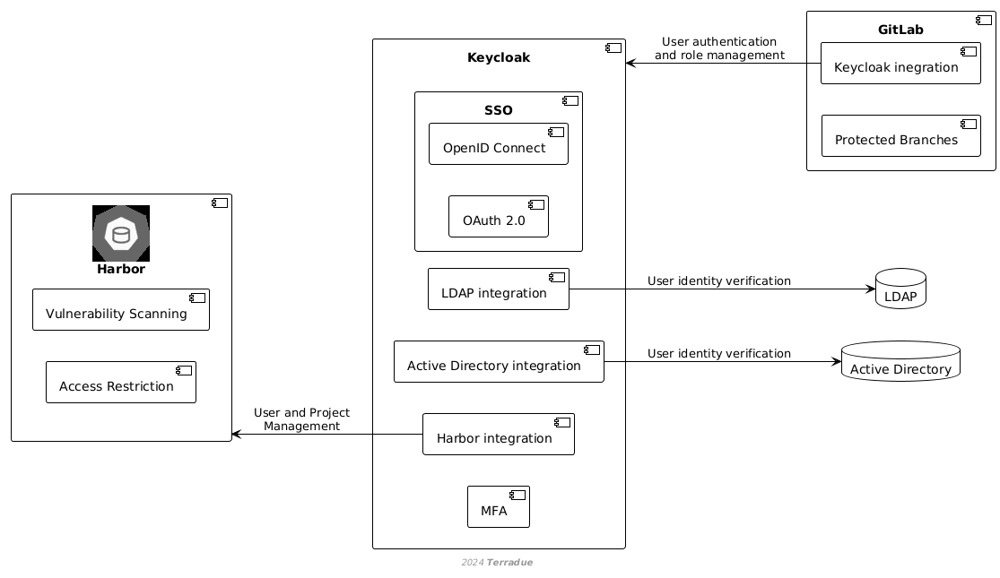

Access Control
Keycloak como sistema central de identidad integrado con GitLab (ramas protegidas) y Harbor (escaneo de vulnerabilidades), con SSO, RBAC, identidad federada, tokens y MFA.
Access control supports the managing of application packages by ensuring that only authorised users can access, modify, or deploy application packages is essential for maintaining the security and integrity of the platform’s operations. The CopernicusLAC platform employs Keycloak as its central identity and access management system, integrating with tools like GitLab and Harbor to manage permissions and secure access to application packages.
The key components of the access control mechanism are:
- Keycloak Identity and Access Management:
- Centralised Authentication and Authorization: Keycloak provides centralised authentication and authorization services for the CopernicusLAC platform. Users log in through Keycloak, which manages their identity and assigns appropriate roles and permissions across the platform’s various services, including GitLab and Harbor.
- Single Sign-On (SSO): Keycloak enables SSO across all integrated services. This means users only need to authenticate once to access GitLab, Harbor, and other platform services, streamlining the user experience and ensuring consistent access control.
- Role-Based Access Control (RBAC): Keycloak allows administrators to define and manage roles centrally. These roles determine what actions a user can perform across different services. For instance, a user might have a "Developer" role in GitLab and a "Maintainer" role in Harbor, with each role granting different levels of access.
- Federated Identity: Keycloak supports federated identity management, allowing the integration of external identity providers (e.g., LDAP, Active Directory, social logins). This enables integration with existing organisational identity systems.
- GitLab Access Controls:
- Integration with Keycloak: GitLab is integrated with Keycloak for user authentication and role management. Users’ roles in GitLab are determined by the permissions assigned to them in Keycloak, ensuring consistent and secure access across the platform.
- Protected Branches: GitLab allows for protected branches, where only users with specific roles (as determined by Keycloak) can push changes or merge code. This ensures that critical branches, such as the main or production branches, are safeguarded against unauthorised modifications.
- Harbor Access Management:
- User and Project Management via Keycloak: Harbor’s access control is also managed through Keycloak. This integration ensures that users’ access to container images is consistent with their assigned roles, providing a secure environment for storing and deploying application packages.
- Vulnerability Scanning and Access Restriction: Harbor integrates with vulnerability scanning tools and can restrict access to container images based on scan results. This ensures that only secure and validated images are available for deployment, aligned with the access controls managed by Keycloak.
- Authentication and Authorization:
- Token-Based Authentication: Keycloak supports token-based authentication for API access and automated processes. Users and services can generate access tokens with specific scopes and expiration dates, providing secure, granular access to resources without exposing user credentials.
- Multi-Factor Authentication (MFA): Keycloak enforces MFA policies, adding an additional layer of security. Users must provide a second form of verification, such as a mobile app code, when accessing sensitive parts of the platform.
The access control implementation should follow the steps below:
- Role Assignment in Keycloak: Administrators define user roles in Keycloak, which are then propagated across all integrated services like GitLab and Harbor. This centralised role management simplifies access control and ensures consistency across the platform.
- Access Monitoring and Auditing: Keycloak provides logging and auditing features that track user activity across the platform. This allows administrators to monitor access patterns, detect unauthorised access attempts, and audit changes to application packages.
- Security Policies Enforcement: The platform leverages Keycloak’s advanced security features, such as mandatory multi-factor authentication (MFA) and regular audits of access permissions, to enhance security. These policies ensure that access is granted only to authorised users and that sensitive operations are securely managed.

The diagram above illustrates how Keycloak integrates with GitLab and Harbor to manage user authentication, role-based access control, and security features such as vulnerability scanning and multi-factor authentication. This architecture ensures secure and consistent access management across the platform’s services.